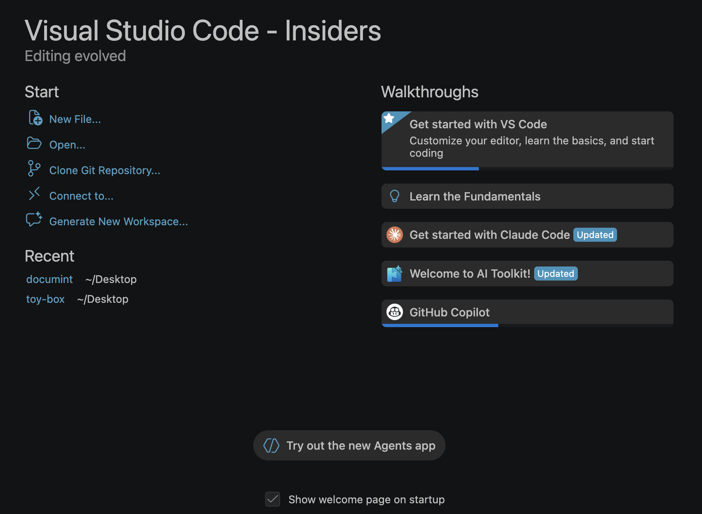

Visual Studio Code 1.116
_发布日期：2026 年 4 月 15 日_
欢迎来到 Visual Studio Code 的 1.116 版本。此版本继续致力于让聊天和代理的使用更加强大和高效。以下是本次更新的亮点：
- Agent Debug Logs: 查看之前代理会话的日志，以理解和调试代理交互。
- Copilot CLI thinking effort（思考力度）: 在 Copilot CLI 中配置模型的思考力度，以平衡响应质量和延迟。
- Terminal agent tools（终端代理工具）: 从代理会话中与任何终端会话交互。
- GitHub Copilot built-in（GitHub Copilot 内置）: 无需安装 GitHub Copilot Chat 扩展即可开始使用 AI。
祝编码愉快！
代理体验
调试之前的代理会话
设置: setting(github.copilot.chat.agentDebugLog.fileLogging.enabled)
Agent Debug Log（代理调试日志）面板会按时间顺序显示聊天会话期间代理交互的事件日志，这对于理解发送提示词时发生的情况以及调试聊天自定义非常有用。
您现在可以查看当前会话以及之前会话的日志，日志会在本地磁盘上持久保存。这样，您即使在会话结束后也能回顾和调试过去的代理交互。

启用 Agent Debug Logs 面板的设置现已合并到故障排查设置 setting(github.copilot.chat.agentDebugLog.fileLogging.enabled) 中。
在文档中了解有关 Agent Debug Logs 面板的更多信息。
在 Copilot CLI 中配置思考力度
与本地代理会话类似，您现在可以在 Copilot CLI 会话中使用语言模型选择器来配置推理模型的思考力度。思考力度决定了模型对每次请求的推理深度，可以根据您的需求平衡响应质量和延迟。
在选择器中选择一个推理模型，然后选择箭头以显示可用的力度级别。不同模型的可用力度级别可能有所不同。非推理模型不会显示该子菜单。

在文档中了解有关 thinking effort and reasoning（思考力度与推理）的更多信息。
自定义欢迎页
Chat Customizations（聊天自定义）对话框可通过Chat: Open Customizations 命令或聊天视图中的齿轮图标打开，现在新增了一个欢迎页面，为您提供所有代理自定义的概览。

创建自定义功能最初可能令人望而生畏，所以您现在可以使用欢迎页面上的 Customize Your Agent 输入框，让 VS Code 根据自然语言描述来起草自定义内容，例如代理、技能和指令。
在代理自定义文档中了解有关自定义代理的更多信息。
工具确认轮播（实验性功能）
设置: setting(chat.tools.confirmationCarousel.enabled)
为使批准或拒绝多个工具调用更加高效，聊天现在提供了一个轮播控件用于工具确认。轮播提供了一种紧凑且可导航的方式来按顺序查看和批准多个工具调用，无需在对话中上下滚动。

此功能为实验性功能，由 setting(chat.tools.confirmationCarousel.enabled) 设置控制。它在 VS Code Insiders 中默认启用，并在我们收集反馈的同时逐步向 Stable 版本推出。
Visual Studio Code Agents（Insiders）
注意: Visual Studio Code Agents 应用程序目前处于预览阶段，仅在安装 VS Code Insiders 时可用。
在上一个版本中，我们分享了 Visual Studio Code Agents 应用程序，这是一个新的预览版配套应用程序，随 VS Code Insiders 一起发布，专为代理优先的开发模式而构建。
自 1.115 版本推出该应用程序以来，我们根据反馈不断进行迭代，添加新功能和修复，以提供出色的代理优先体验。
最新更新包括：
- 推理级别选择: 如上所述，您现在可以在 Copilot CLI 会话中为推理模型配置思考力度。
- Plan mode（计划模式）处理: 对于涉及计划的 CLI 会话，Plan mode 将自动启动。
- Files（文件）选项卡默认显示在 Changes 中: Files 选项卡现在默认显示在 Changes 面板中。
- 会话响应、主题和渲染改进: 对响应处理、视觉一致性和渲染性能进行了一系列优化。
- 应用程序名称: 我们将应用程序重命名为 Visual Studio Code Agents - Insiders。
我们在 VS Code 欢迎页面中添加了一个新的入口，用于试用新的 Agents 应用程序:

您仍然可以通过与 1.115 版本相同的方式打开该应用程序:
- 从操作系统的开始菜单或应用程序文件夹中启动 Visual Studio Code Agents - Insiders。
- 从命令面板运行 Chat: Open Agents Application。

终端工具
代理工具的前台终端支持
send_to_terminal 和 get_terminal_output 代理工具现在也适用于前台终端，而不仅仅是代理创建的后台终端。这意味着代理可以从终端面板中任何可见的终端读取输出并发送输入，例如正在运行的 REPL 或交互式脚本。
终端输入改进
此版本对代理会话中的终端输入体验进行了多项改进：
- 检测终端输入: 移除了基于 LLM 的终端输入检测。以前，每个终端输出块都会触发一次额外的 LLM 调用来判断终端是否正在等待输入，这增加了延迟并消耗了额外的 token。现在，代理通过
send_to_terminal直接处理终端输入，并在需要时使用问答轮播让您来做决定。 - 进度消息: 当代理向终端发送答案时，进度消息现在会显示正在回答哪个问题，例如:
Sending "my-project" to terminal (replying to: What is your project name?)。 - Focus Terminal（聚焦终端）: 当代理需要终端输入时，例如提示输入密码或交互式安装程序（如
npm init），问答轮播现在包含一个 Focus Terminal 按钮。选择它可以聚焦相关终端并直接输入您的响应。如果您在轮播打开时开始在终端中输入，轮播会自动关闭并通知代理您正在直接处理输入。
默认启用后台终端通知
设置: setting(chat.tools.terminal.backgroundNotifications)
后台终端通知现在默认启用。当代理在后台终端运行命令时，它会在命令完成、超时或需要输入时自动收到通知。这使代理能够更快、更准确地响应，而无需轮询终端输出。
聊天 UX
此版本对聊天进行了若干 UX 改进：
- 顶层差异对比: 代码差异现在直接在聊天对话中渲染，因此您无需切换到单独的差异视图即可查看建议的更改。

- 渲染性能: 聊天响应现在渲染速度更快，还增加了减少布局抖动和流式传输期间更高效的增量更新等改进。还修复了工具调用更新快速爆发导致扩展宿主机短暂挂起的问题。
- 聊天发送性能: 修复了发送聊天消息时因加载聊天自定义而被阻塞的问题。即使提示词仍在加载中，消息现在也会立即在聊天对话中可视化地显示出来。
- 子代理进度: 子代理进度的展开视图现在在视觉上更加明显，使您更容易跟踪子代理的进行情况。
无障碍功能
Agents 应用程序的无障碍功能
Agents 应用程序（在 VS Code Insiders 中可用）现在包含对键盘和屏幕阅读器用户的全面无障碍支持。
- 无障碍帮助对话框: 在聊天输入框聚焦时按
kbstyle(Alt+F1)（macOS 上为kbstyle(Option+F1)）打开无障碍帮助对话框。它提供了 Agents 应用程序的概述，列出了可用的视图，并展示了在视图之间导航的按键绑定。 - 键盘导航命令: 新的按键绑定允许您快速聚焦 Agents 应用程序中的关键视图:
Focus Changes View(kb(workbench.action.agentSessions.focusChangesView))Focus Chat Customizations View(kb(aiCustomization.focusView))Focus Files Explorer View(kb(workbench.action.agentSessions.focusChangesFileView))
这些按键绑定作用域限于 Agents 窗口，不会覆盖标准的 VS Code 对应键。
- Verbosity setting（详细度设置）:
setting(accessibility.verbosity.sessionsChat)设置控制聊天输入是否播报关于打开无障碍帮助的 ARIA 提示。禁用它以取消播报。 - ARIA 标签和地标: 辅助侧栏现在标记为补充地标并带有描述性标签，工作区选择器按钮具有有意义的 ARIA 标签，会话列表项包含创建时间上下文。
键盘快捷键搜索结果的无障碍屏幕阅读器说明
在键盘快捷键编辑器中搜索时，屏幕阅读器现在会播报导航到搜索结果的说明。NVDA 和其他屏幕阅读器会播报 "Use Ctrl+Down Arrow to access the searched shortcut details"，以便您快速导航到结果表格。您可以使用 setting(accessibility.verbosity.keyboardShortcuts) 设置禁用此播报。
集成浏览器
集成浏览器现在可以通过两个新入口更轻松地访问：
- View（视图）菜单，位于 View > Browser
- 键盘快捷键
kb(workbench.action.browser.openOrList)
如果没有打开的标签页，这些操作会打开集成浏览器，或者让您快速查看并跳转到现有标签页。
这些新入口是对已有入口的补充：
- Browser: Open Integrated Browser 命令
- 指向 localhost 站点的链接点击 (
setting(workbench.browser.openLocalhostLinks)) - 标题栏图标 (
setting(workbench.browser.showInTitleBar)) - 要求代理打开或与浏览器交互 (
setting(workbench.browser.enableChatTools))语言
JS/TS Chat Features 扩展（预览版）
设置: setting(jsts-chat-features.skills.enabled:true)
新的内置 JS/TS Chat Features 扩展增强了 Copilot 处理 TypeScript 和 JavaScript 的技能。在这个首个版本中，该扩展提供了用于搭建现代 TypeScript 项目的技能。我们计划在未来的版本中增强和扩展其功能。
要立即试用这些技能，请启用 setting(jsts-chat-features.skills.enabled:true) 设置。
工程
GitHub Copilot 现已成为内置功能
GitHub Copilot Chat 现在是 VS Code 中的内置扩展。新用户无需安装任何扩展即可开始使用 Copilot 功能，例如聊天、内联建议和代理。Copilot 是标准 VS Code 安装的一部分，开箱即用。
这一变更是我们持续努力将 VS Code 打造为开源 AI 代码编辑器的一部分。通过将 Copilot 作为内置扩展提供，我们减少了新用户的阻碍，确保 AI 驱动的功能从首次启动即可无缝集成。
现有用户不受此变更的影响。如果您已安装 Copilot 扩展，它将继续像之前一样正常工作。
与之前一样，如果您不希望使用 AI 功能，可以通过 setting(chat.disableAIFeatures) 设置禁用它们。
企业版
用于过滤代理网络访问的组策略
管理员现在可以使用组策略来控制代理工具可以访问哪些网络域。当通过策略启用 setting(chat.agent.networkFilter) 设置时，来自 fetch 工具和集成浏览器等代理工具的网络访问将根据允许和拒绝的域列表进行限制。
setting(chat.agent.allowedNetworkDomains)指定代理工具可以访问哪些域。支持通配符，例如*.example.com。setting(chat.agent.deniedNetworkDomains)指定哪些域被阻止。拒绝域优先于允许域。
当网络过滤器已启用但两个列表都为空时，所有域均被阻止。当 setting(chat.agent.sandbox.enabled) 也启用时，网络域规则还适用于终端沙箱。
这些策略使用键 ChatAgentNetworkFilter、ChatAgentAllowedNetworkDomains 和 ChatAgentDeniedNetworkDomains 进行配置。在文档中了解有关企业策略的更多信息。
对扩展的贡献
GitHub Pull Requests
GitHub Pull Requests 扩展取得了更多进展，该扩展使您能够处理、创建和管理拉取请求与 issues。新功能包括：
- 添加用于创建拉取请求的聊天工具。
- 工作树也可以通过 "Delete Local Branches and Remotes" 命令删除。
查看扩展 0.136.0 版本的更新日志，了解该版本的全部内容。
已弃用的功能与设置
此版本中新增的弃用项
无
即将到来的弃用项
- Edit Mode 自 VS Code 1.110 版本起正式弃用。用户可以通过 VS Code 设置
setting(chat.editMode.hidden)暂时重新启用 Edit Mode。此设置将在 1.125 版本之前一直受支持。从 1.125 版本开始，Edit Mode 将被完全移除，无法再通过设置启用。致谢
对我们的 issue 跟踪的贡献：
- @gjsjohnmurray (John Murray)
- @RedCMD (RedCMD)
- @IllusionMH (Andrii Dieiev)
- @albertosantini (Alberto Santini)
对 vscode 的贡献：
- @AndreasArvidsson (Andreas Arvidsson): Fix TextmateSnippet clone method to correctly assign _children PR #295555
- @gryan11 (Gabriel Ryan): Fix: add missing override modifiers in test mock class PR #308558
- @maruthang (Maruthan G)
- fix: preserve code block toolbar visibility during chat streaming PR #307978
- fix: strip ANSI escape codes from inline test output messages PR #308161
- fix: resolve default view for markdown files on first startup PR #308739
- @romalpani (Rohan Malpani): feat: enhance sessions view with find widget and header actions PR #307679
- @winstliu (Winston Liu): Fix --prof-startup never being able to profile renderer/extension host PR #307849
- @yogeshwaran-c (Yogeshwaran C)
- Add scrollbar indicators for failing tests PR #307996
- fix: check message location visibility for failureInVisibleDocument peek PR #308697
- Show breakpoint widget on Alt+click in gutter PR #308687
- fix: exclude source annotations from text selection in debug console PR #308925
- @zackbach (Zack Eisbach): Add support for
regexintokenTypesPR #304885
我们非常感谢人们在我们新功能准备就绪后便立即尝试，请经常回来查看这里以了解最新动态。
>如果您想阅读之前 VS Code 版本的发布说明，请访问 code.visualstudio.com 上的 更新页面。